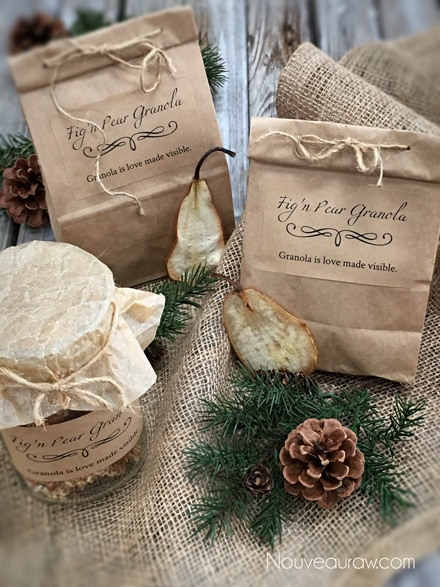
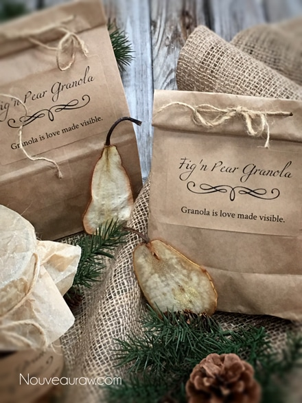

Fig’n Pear Granola

~ raw, vegan, gluten-free ~
Figs, pears, and cinnamon are an excellent combination for thee ole’ pallet.
Unlike apples, most pear varieties do not ripen nicely while still on the tree. Pears that are allowed to become too mature or to ripen on the tree develop a coarse, mealy texture, and often the core is breaken down. Whether you grow pears at home or buy them in the store, it is sometimes challenging to know when to pick them, then how long to ripen them to perfection.
How do you tell when a pear is ready to eat? Hold the pear gently but firmly in the palm of your hand, and apply the thumb of that same hand to the pear flesh just below the point where the stem joins the fruit. When the flesh beneath your thumb yields evenly to gentle pressure, it is time to eat your pear. If you have to push more than slightly, it is not ready yet.
I used a combination of Bosc and Bartlett pears for this recipe. The Bartlett being my favorite of the two due to its mild, sweet flavor with subtle, fragrant citrus notes. When ripe, the soft flesh bruises easily but rewards you with copious juice that likes to trickle down your sleeve as you bite into it.
Raw granola makes for excellent, year-round gifts. There are so many wonderful vessels that you can package them in. Personally, I love to use mason jars. Not only are they adorable, but they also keep the granola from crumbling, and the container is reusable. Even brown paper lunch bags can be easily decorated, giving your gift-giving a unique rustic touch.
If you are sensitive to oats, feel free to exchange them with an equal measurement of soaked and sprouted buckwheat. I haven’t tested it with this recipe but I have used them in others, and they turn out just fine. The texture and flavor are a tad different, but that just adds variety, right?! Well, I best start my day. I hope that you enjoy this recipe and would love to hear from you.
Ingredients:
Yields roughly 5-6 cups
- 2 cups raw, gluten-free rolled oats, soaked
- 2 cups raw almonds, soaked
- 2 cups raw hazelnuts, soaked
- 3 cups chopped fresh figs
- 3 cups chopped fresh pears
- 1/3 cup date paste
- 1/3 cup raw honey or equivalent
- 2 Tbsp vanilla extract
- 2 tsp Ceylon cinnamon
- 1 tsp Himalayan pink salt
Preparation:
- The prep work is to get the nuts and oats soaking. Click on their links to learn how. If you already have soaked and dehydrated nuts on hand, you can use them as-is.
- After soaking the nuts, drain and discard the soak water.
- Drain and rinse the oats until the water starts to run more clear.
- Place the oats and nuts in the food processor and process until the nuts are in small pieces.
- Add the figs, pears, date paste, sweetener, vanilla, cinnamon, and salt to the food processor and blitz until everything comes together.
- Depending on the size of the food processor that you own, you may need to do this in two batches. If you do make two batches, then combine both in a large bowl and stir until combined.
- Feel free to use any liquid sweetener that suits you.
- Spread the batter on the non-stick teflex sheets that come with the dehydrator and dry at 145 degrees (F) for 1 hour, then reduce to 115 degrees (F) for approximately 16-24 hours or until dry.
- At the 1/2 way mark, flip the teflex sheet over onto the mesh sheet and peel away the teflex. This will decrease the drying time.
- Dry times will always vary depending on your climate, humidity, dehydrator model, and how full it is.
- Allow the granola to fully cool before storing in airtight containers. On the counter, it should last several weeks, but you can freeze it for ups to 3 months to extend the shelf life.
- To learn more about maple syrup by clicking (here).
- Raw honey isn’t vegan, but I still use it now and again. Read (here) why I like to.
- Dates are an amazing ingredient for raw food recipes, click (here) to read why.
- Why do I specify Ceylon cinnamon? Click (here) to learn why.
- What is Himalayan pink salt and does it really matter? Click (here) to read more about it.
- Are oats gluten-free? Yes, read more about that (here).
- Are oats raw? Yes, they can be found. Click (here) to learn more.
- Do I need to soak and dehydrate oats? Not required but recommended. Click (here) to see why.
Culinary Explanations:
- Why do I start the dehydrator at 145 degrees (F)? Click (here) to learn the reason behind this.
- When working with fresh ingredients it is important to taste test as you build a recipe. Learn why (here).
- Don’t own a dehydrator? Learn how to use your oven (here). I do however truly believe that it is a worthwhile investment. Click (here) to learn what I use.

© AmieSue.com